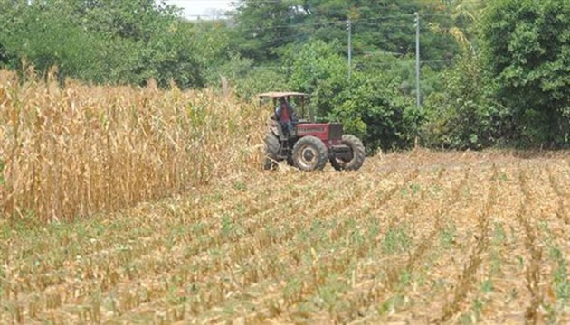
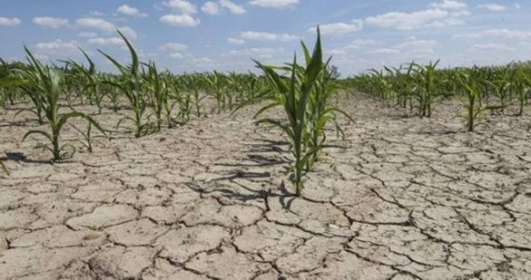
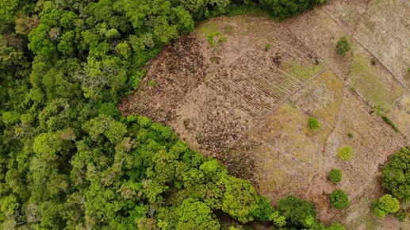
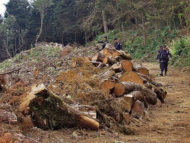

Medio ambiente
   Los recursos naturales se clasifican principalmente por su capacidad de renovación o regeneración en recursos naturales renovables y no renovables.
El viento es un recurso natural renovable del que se puede extraer energía.
Los recursos naturales renovables son aquellos que pueden restituirse en un tiempo relativamente corto, como árboles, el agua, el Sol, el viento y los animales. Por ejemplo, una plantación de pinos puede utilizarse a los diez años para producción de pulpa de papel, y a los 20 años para la construcción de muebles.
Aunque pareciera a veces que los recursos renovables son inagotables, como la luz solar, algunos si corren el riesgo de agotarse si no los administramos de forma correcta. Por ejemplo, para que se forme un bosque se necesitan años; la tala indiscriminada conduce a la pérdida de este recurso, como ocurre en zonas del Amazonas.
El carbón es un recurso natural no renovable que se extrae de minas.
Los recursos naturales no renovables son aquellos materiales o elementos cuya producción es escasa o toma un tiempo muy largo para poder reutilizarlo. Además, se encuentra en cantidades limitadas.
Ejemplos de recursos no renovables son los combustibles fósiles, como el petróleo y el carbón. Estos materiales demoraron millones de años en producirse a partir de los depósitos subterráneos de materia orgánica.
La planta de algodón es un recurso natural biológico renovable que nos sirve para elaborar vestimentas.
A partir de los recursos naturales el ser humano produce bienes y servicios. Por ejemplo, a partir del algodón y la lana se producen telas con las que protegemos nuestra piel. De los árboles se extrae la madera para construir muebles y casas para resguardarnos de la intemperie. De los yacimientos se extrae hierro con el que se construyen infinidad de artículos y herramientas.
Los recursos naturales de un país son fuente de riqueza para la explotación económica. Por ejemplo, Venezuela se considera el país más rico en reservas de petróleo, México es un país rico en minerales como plata, cobre y plomo, mientras que Colombia es uno de los países con mayor riqueza de agua dulce.s
Si extraemos sin medida ni regulación los recursos naturales de un bosque corremos el riesgo de
no poder
recuperarlo.
La explotación de los recursos naturales implica la extracción y procesamiento de los mismos para poder sacarles provecho. Por ejemplo, el petróleo se encuentra bajo la superficie y se usan diversos métodos para extraerlo, procesarlo y refinarlo.
Sin embargo, si hay una sobreexplotación de los recursos naturales, renovables o no renovables, estamos corriendo el riesgo de desaparecerlos. Aunque la flora y la fauna son recursos biológicos renovables, su explotación sin medida puede conducir a la extinción de algunas especies, sin la posibilidad de recuperación.
Por ejemplo, los galápagos son una especie de tortugas salvajes cazadas por su carne y su caparazón que hasta hace 200 años existían en gran cantidad. Hoy en día están en peligro de extinción.
La conservación de los recursos naturales es esencial para que nosotros y las generaciones futuras sigan contando con recursos para llevar a cabo su vida y satisfacer sus necesidades. Por eso, hay alternativas que podemos poner en práctica para la conservación de los recursos: